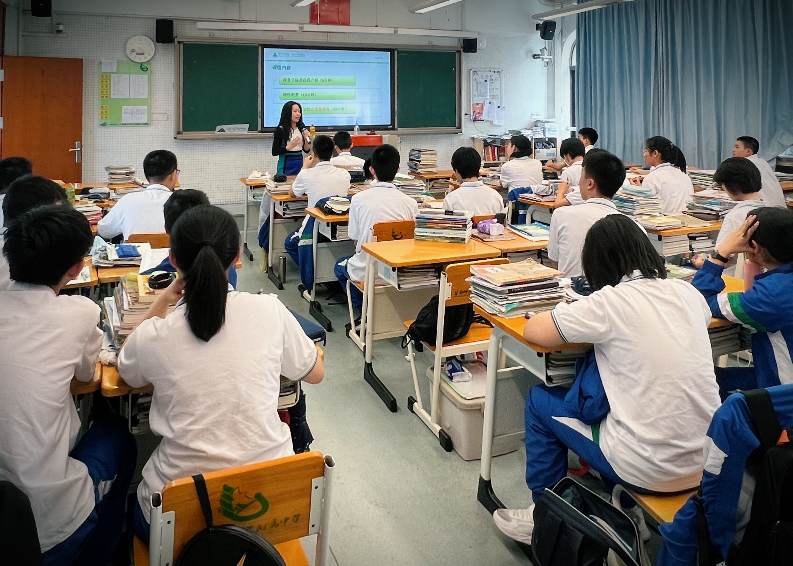
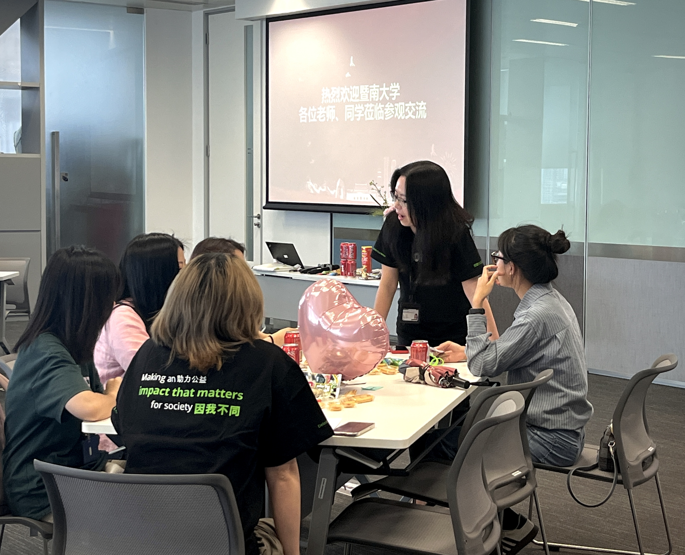
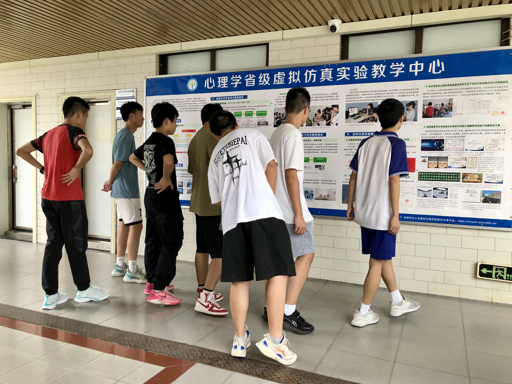

🎯 生涯规划活动
帮青少年找到方向，让家长理解孩子的选择。我站在中间，把孩子的梦想翻译给家长听，把家长的担忧翻译成孩子能接受的建议。

在华师大附中就读的学生都是妥妥的学霸，知识渊博，善于思考。对于他们进行职业生涯规划活动，是一个对志愿者来说比较大的挑战。
我当时借着储蓄规划这个话题，引出了时间规划的话题：
要明白将来的目标，以结果为导向，反向去安排自己每一步的小目标和每一天的具体活动行程，这是非常高效的方法。
在短短90分钟的分享过程中，学霸们提出了自己的一些想法和见解，令我也受益匪浅。
我最大的反思是：如果有一天我自己的孩子可以成为其中一员，我一定会非常骄傲。

面临毕业就业的大学生对将来有着各自深刻的畅想，但由于他们涉及的面不广，更多是搜集一些非第一手资料的信息。
因此，这次生涯规划活动可以让他们面对面地与来自各行各业、各个岗位以及不同职业发展历程的志愿者进行直接交流，提供了一个非常好的深度平台。
志愿者们针对简历修改、面试技巧等细节，给大学生们提供了很多实战建议。

广州中学面向高一学生开展职业生涯教育，当时还有来自各行各业的其他志愿者一同参与。
学生们根据自己将来职业发展的兴趣爱好，选择进入对应职业的课堂，听取志愿者的分享。活动的氛围相对轻松愉快，学生可以随时打断志愿者老师，提出他们心目中的问题；我们也不拘泥于幻灯片上既定的内容，与高中的孩子进行直接交流。
广州中学非常重视这类活动，每年都会定期举办。我有幸曾两次担任志愿者，与同学们分享了很多自己的心路历程。
活动后，我得到了孩子们的认可，并与他们保持着日常沟通：
- 当时的孩子后来成功考上了心仪的大学，并在2026年6月本科毕业
- 有的人参与了当时所期待的工作
- 有的人选择继续读研究生，进一步深造

图片显示的是广州市第一中学的同学们去参加华南师大心理学院组织的活动。
组织这个活动的初衷，是让高中的孩子可以提前了解大学的校园、生活以及学院的一些情况。即使他们未来不一定选择心理学专业，但也要让他们知道：高中的生活除了学习之外，还需要扩展视野，为自己的大学学习和生活进行提前规划，将眼光放得更长远。
这个过程中也有部分家长参与。当他们看到孩子和志愿者之间的积极互动时，会认识到对于已经接近成年的孩子，沟通交流的方式与幼儿园、小学、初中阶段是非常不同的。
除了照顾物质生活和衣食住行，对于他们未来的路，不可以再用要求、命令或者全部安排好的方式，而是要启发他们自己去探索。
当问到孩子将来的志愿是什么时，幼儿园或小学生可能比较轻易就能说出某种具体的职业，但当然，他们对这些职业并不会有非常深刻的理解。而去到初中、高中的孩子，反而变得说不出自己未来的职业是什么，因为他们知道自己的想象和实际情况可能有差异。
而我们作为家长的，就是提供尽可能多的机会，让他们接触不同的行业和专业，拓宽视野，从而才有机会找到自己真正喜欢的。
生涯规划活动中，我扮演的"翻译家"角色：
• 把孩子的梦想翻译成可行的路径：从"我想当..."到"我需要做什么"
• 把家长的经验翻译成孩子能接受的建议：不是说教，而是分享
• 把职业世界翻译给孩子看：不是遥不可及，而是可以探索的
从高中到大学，从规划到模拟面试，每一次都是帮助孩子找到"自己想成为什么样的人"的过程。